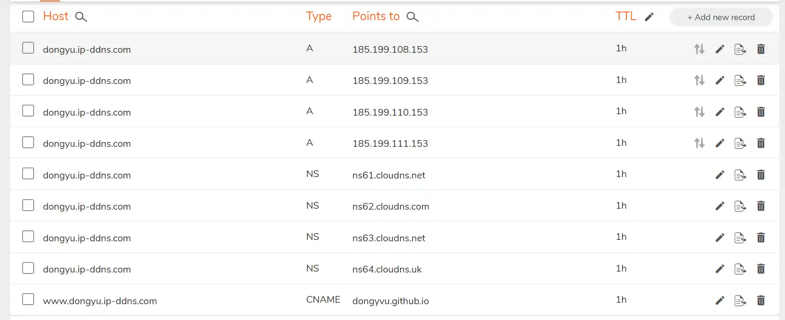
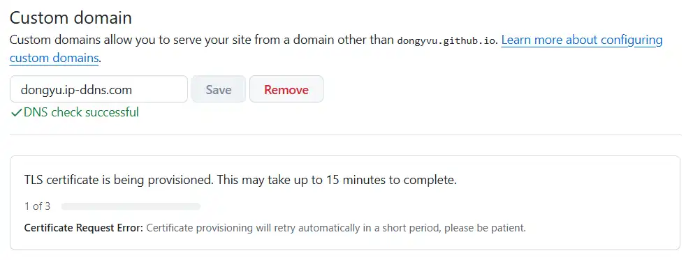
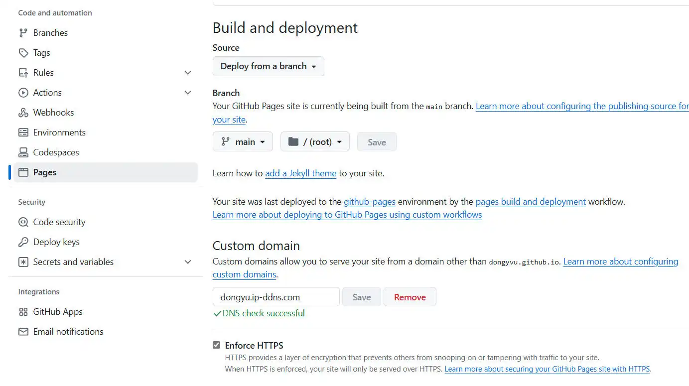

网站更换域名啦
近期看到了个新闻，说是io域名药丸😨[1]，拖了近一个月，终于决定处理这件事了——换域名。不知道有没有用，但至少可以换个符合博客名字的域名啦🥰。
首先，买个域名。奈何本人不想每年交一笔钱来运营这个没人看的博客，于是选择了免费的二级域名。我选择了cloudns提供的二级域名，如下图设置就行

然后去GitHub如下设置自定义域名，成功了会显示DNS check successful，然后再等十几分钟，因为证书要刷新。最后记得清除浏览器缓存再看效果！！！

（可选）加上Enforce HTTPS，成功样例如下图

但是下次hexo更新文章的时候会把根目录下的CNAME文件清除，这样会导致配置的域名失
效，所以要在souce目录下添加上CNAME文件，里面填上自己的域名。

参考教程
https://www.cnblogs.com/gambler/p/12051638.html
https://segmentfault.com/a/1190000011203711
域名解决方案
https://www.tjsky.net/tutorial/922
本博客所有文章除特别声明外，均采用 CC BY-NC-SA 4.0 许可协议。转载请注明来源 涷雨洒尘的心情驿站！